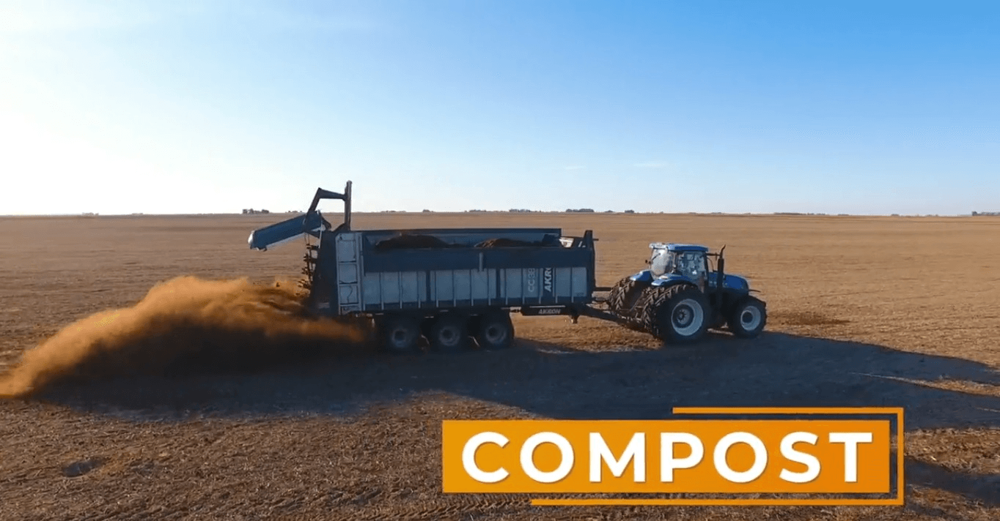
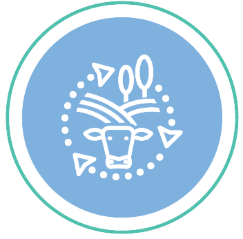

En Agropecuaria La Criolla en todas nuestras producciones, agregamos valor de forma sostenible y responsable
Balance de carbono del establecimiento
Formamos parte del programa Carbon Group + Corteva para el cálculo de nuestra Huella de Carbono y la venta de Bonos de Carbono en el mercado internacional.
Buenas Prácticas Agrícolas y Ganaderas
Seguimos el amplio conjunto de BPAs: disminución del uso de agroquímicos, aumento de superficie implantada con pasturas, rotación de cultivos, siembra directa, plan de forestación, control de calidad de aguas subterráneas, aplicación de compost de elaboración propia, etc.
